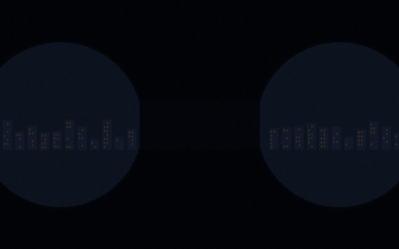

How to Verify a Private Investigator's License in Louisiana
Louisiana requires all private investigators to hold an active license issued by the State Board of Private Investigator Examiners. Learn how to check a PI's credentials before hiring and what red flags to watch for.
Read More